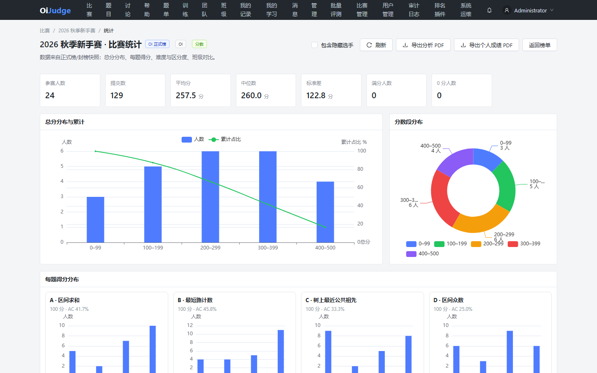
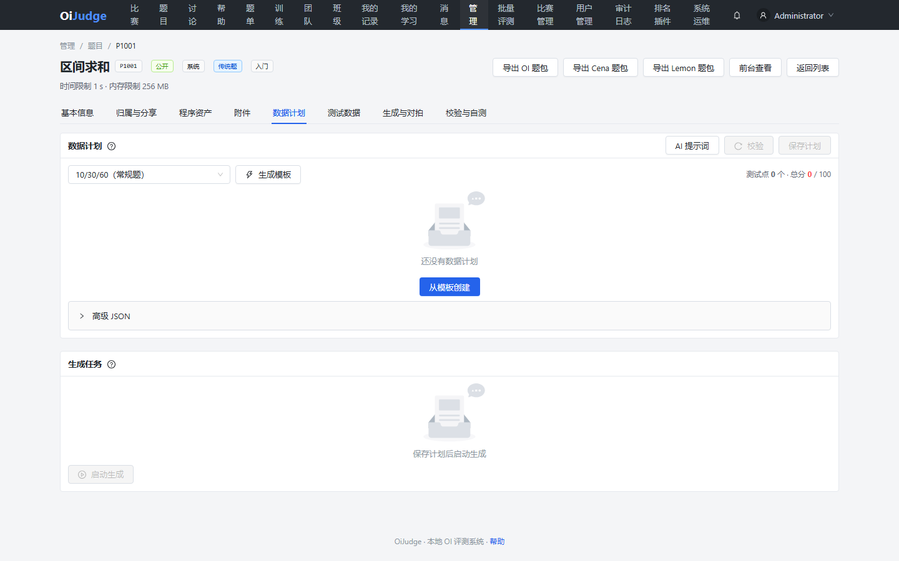
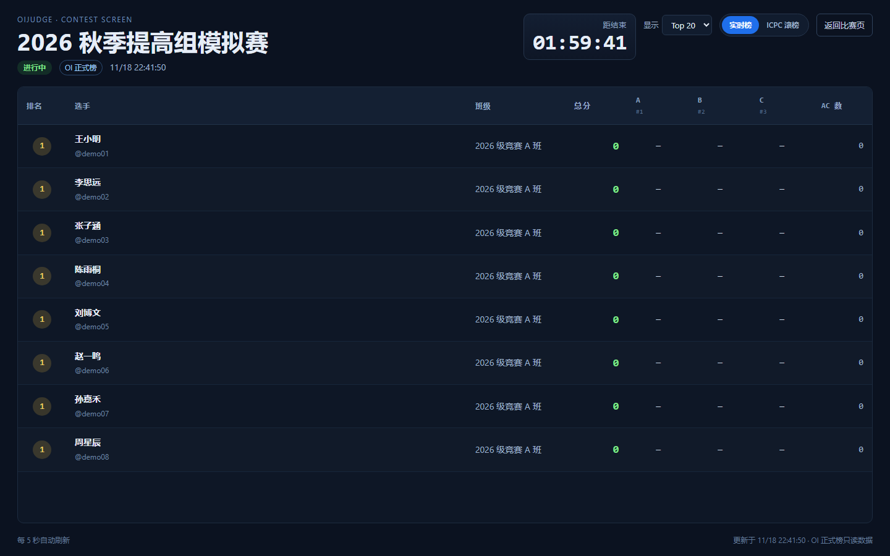
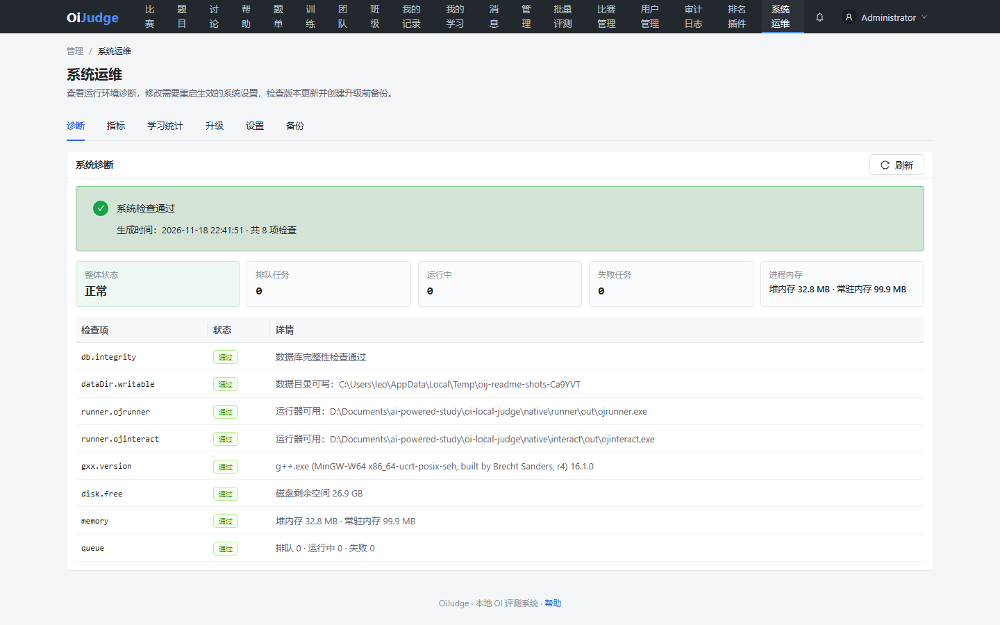

01 / 学生机
只开浏览器
不装客户端、不配环境。机房电脑打开网址就能登录、看题、提交。
OiJudge 把 出题、评测、比赛、收作业、讲评 放进同一台 Windows 电脑。
学生不用安装任何东西，打开浏览器就能上课、比赛、交作业。

出题一个工具，评测一个网站，收作业一个网盘，成绩一个表格。OiJudge 把这些动作收进同一台教师机。
不装客户端、不配环境。机房电脑打开网址就能登录、看题、提交。
题目、数据、提交、成绩在同一个系统里流转，不用来回压缩、解压、对名单。
默认只允许本机访问，备份、恢复、权限都在管理端，不把学生数据交给外部平台。
错题、标签掌握度、每题得分分布，比赛结束直接打开统计页。
普通 OJ 从“交题”开始；OiJudge 从“出题”开始，一直管到“讲评”。
题面、程序、数据计划、生成、校验、对拍
多种题型、部分分、重测、取消、同时评测
报名、团队、封榜、大屏、证书、反例
压缩包、预览、后台进度、草稿发布、导出
错题、掌握度、分数分布、分析报告
不是功能堆叠，而是把老师每周都会遇到的动作做成按钮。
标准程序、生成器、校验器、特殊判分、交互程序，一处管理；数据计划用一张表决定“分几组、每组几个点、每组多少分”，再一键生成和检查。

个人赛、团队赛、混合赛；导入名单或开放报名；封榜、解封、归档；比赛大屏、奖项、证书、赛后报告都在同一个控制台。

按“学生 / 题目 / 代码”自动整理；先预览谁没匹配上；后台导入、断点继续；结果先做草稿，确认后才进正式成绩，最后导出表格。

班级、训练计划、完成度、错题、标签掌握度；学生看自己的学习页，教练能看提交源码，讲评时不再靠印象。

总分分布、分数段、每题得分、难度、区分度、班级/团队对比；分析报告和学生成绩单可以直接导出。
默认只允许本机访问；需要学生从其他电脑访问时再开局域网。首次启动随机管理员密码，支持自动备份、恢复和独立评测账户。

如果你只需要一个在线判题页，OiJudge 会显得“多”；如果你要带班、办赛、收作业，它刚好。
截图来自本地演示数据，界面就是现在能用的版本。
用 EAC design world 的 19-paperclip 模板制作：6 段镜头、真实界面推拉、大字关键词和本地生成配乐。不是截图轮播。
打开 MP4一台教师机、一个浏览器、一个局域网。学生机不需要装任何东西。